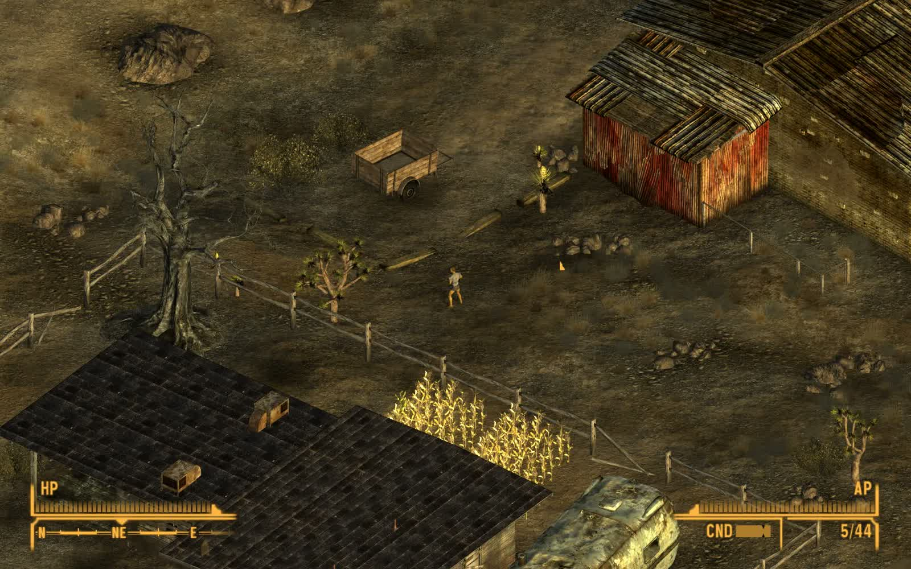

FALLOUT: NEW VEGAS · ALPHA MOD
The Mojave.
A different perspective.
Explore New Vegas with an isometric camera, click-to-move navigation and native context actions.

Your cursor leads the way.
A native xNVSE plugin controls the camera and projection inside the original game. Choose a destination, rotate your view, and open contextual actions at your cursor.
- Left click
- Move or interact
- Right click
- Context actions and Pickup Area
- Middle drag
- Rotate and tilt
- Mouse wheel
- Zoom
- Alt
- Aim / attack
- F8
- Toggle isometric mode
Try the prototype.
Requires Windows, your own Fallout: New Vegas 1.4.0.525 installation and xNVSE. The release includes the plugin, launcher, native UI and corresponding source.
This is an early alpha. Interiors, dialogue, scripted cameras and compatibility with other mods still need playtesting. DLSS, RTX Remix and roof cutaways are disabled.